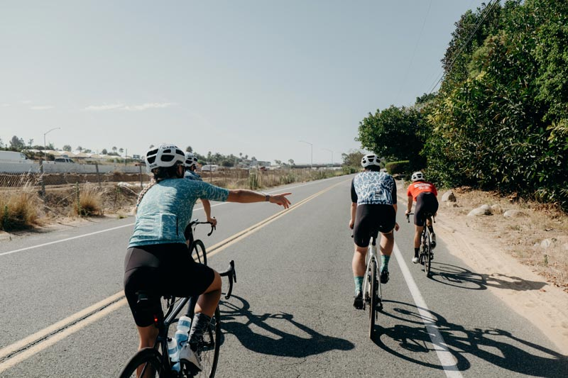

About Us:
Bountiful Foods is small business specializing in organic, locally grown foods. We have many food trucks that cover the coastal area from Los Angeles to San Diego. We sell fruits and produce directly from farms in the area, but also use some trusted, reputable national and international suppliers of organic produce.
About Carlsbad:
In the 1880s a former sailor named John A. Frazier dug a well in the area. He began offering his water at the train station and soon the whistle-stop became known as Frazier's Station. A test done on a second fresh-water well discovered the water to be chemically similar to that found in some of the most renowned spas in the world, and the town was named after the famed spa in the Bohemian town of Karlsbad (now Karlovy Vary, Czech Republic).To take advantage of the find, the Carlsbad Land and Mineral Water Company was formed by a German-born merchant from the Midwest named Gerhard Schutte together with Samuel Church Smith, D. D. Wadsworth and Henry Nelson. The naming of the town followed soon after, along with a major marketing campaign to attract visitors. The area experienced a period of growth, with homes and businesses sprouting up in the 1880s. Agricultural development of citrus fruits, avocados and olives soon changed the landscape. By the end of 1887, land prices fell throughout San Diego County. However, the community survived on the back of its fertile agricultural lands.